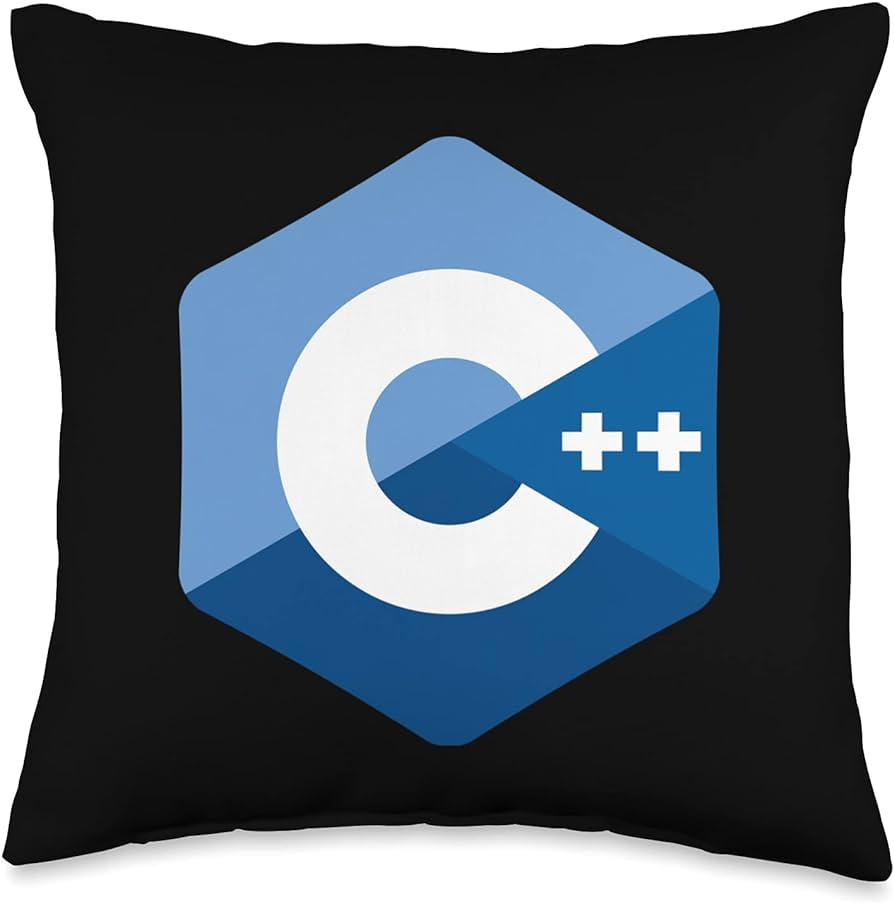
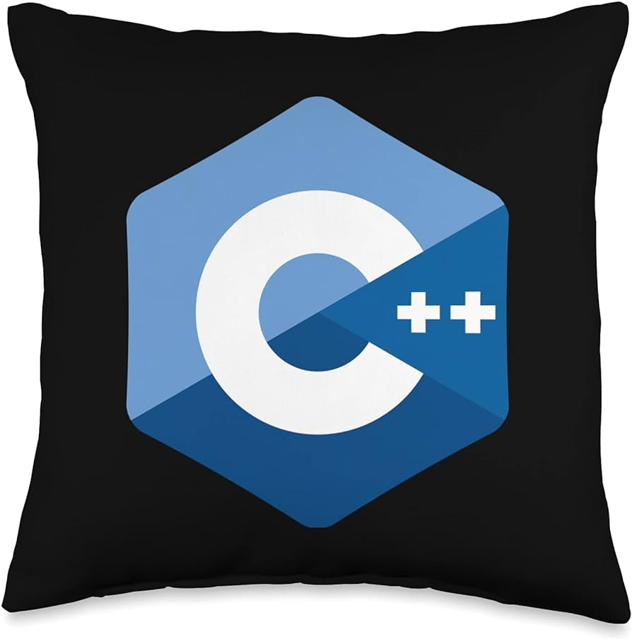
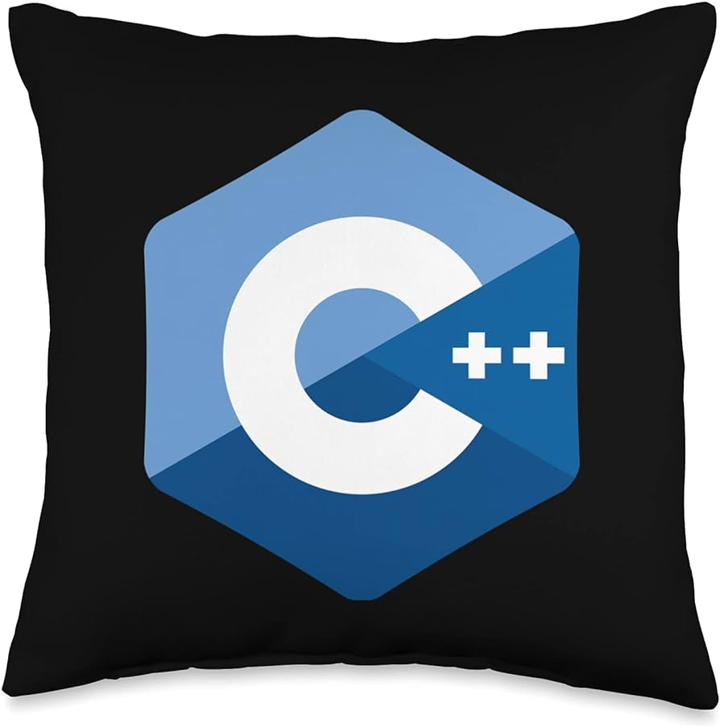

Skills

 


Soft-Ware Engineer | Techie 😉
Hey there! I'm Tushar D. Sune, a Full stack developer fueled by a passion for crafting immersive user experiences and building dynamic web applications. With a solid foundation in ReactJS, Node.js, and MongoDB, I thrive on bringing both creativity and efficiency to every project I tackle. My journey in software development has equipped me with a diverse skill set, ranging from frontend technologies like ReactJS to backend prowess with Node.js and MongoDB. I'm well-versed in Java, SQL, Python, and AI, allowing me to adapt and innovate in various aspects of development. Whether it's collaborating with cross-functional teams or staying abreast of the latest tech trends, I'm always eager to learn and evolve. I'm passionate about connecting with fellow professionals to explore collaboration opportunities and share insights within the realm of MERN stack development and beyond. Feel free to reach out if you're interested in discussing ideas or joining forces on exciting projects!.

A AI ML BASED ,, In this developing world of AI, we have a Speech Emotion Recognition system to support the daily task of a working professional. It comes with its own pros and cons which have been also discussed in this project. It is easy to develop yet very easy to use and will develop more in the coming times. It is one more step ahead in the field of technology to understand human emotion and its behaviors. Emotion-sensing technologies can help employees make better decisions, improve their focus and performance in the workplace, manage stress, and help them adopt healthier and more productive working styles. Emotion-sensing technology will also enable companies to establish deeper emotional connections with their consumers through virtual assistants. Data collected through such devices can help companies understand how internal and external environmental factors impact their employees. As a result, companies can redesign processes accordingly, to help keep their personnel better engaged and productive. Speech recognition relies upon “feature analysis,” which is “speaker independent”. This method processes voice input using phonetic unit recognition and finds similarities between expected inputs and the actual digitized voice input. Simply put, it matches a user’s speech to generic voice patterns. Highly accurate speaker-independent speech recognition is challenging to achieve as accents, inflections, and different languages thwart the process. An example of speech recognition technology in use is speech-to-text platforms such as Speech Matics or Google’s speech-to-text engine. In addition, many voice assistants offer speech-to-text translation.
Digital image steganography is the process of embedding information within a cover image in a secure, imperceptible, and recoverable way. The three main methods of digital image steganography are spatial, transform, and neural network methods. Spatial methods modify the pixel values of an image to embed information, while transform methods embed hidden information within the frequency of the image. Neural network-based methods use neural networks to perform the hiding process, which is the focus of the proposed methodology. This research explores the use of deep convolutional neural networks (CNNs) in digital image steganography. This work extends an existing implementation that used a two-dimensional CNN to perform the preparation, hiding, and extraction phases of the steganography process. The methodology proposed in this research, however, introduced changes into the structure of the CNN and used a gain function based on several image similarity metrics to maximize the imperceptibility between a cover and steganographic image. The performance of the proposed method was measured using some frequently utilized image metrics such as structured similarity index measurement (SSIM), mean square error (MSE), and peak signal to noise ratio (PSNR). The results showed that the steganographic images produced by the proposed methodology are imperceptible to the human eye, while still providing good recoverability. Comparing the results of the proposed methodology to the results of the original methodology revealed that our proposed network greatly improved over the base methodology in terms of SSIM and compares well to existing steganography methods.